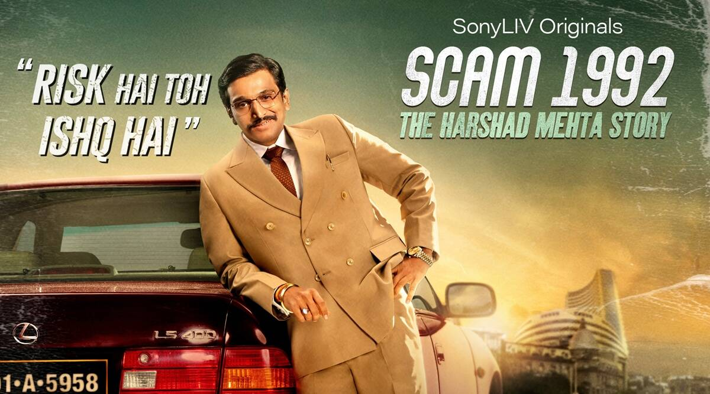
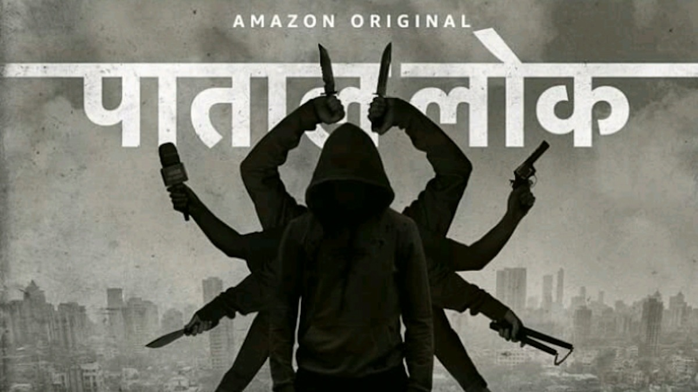
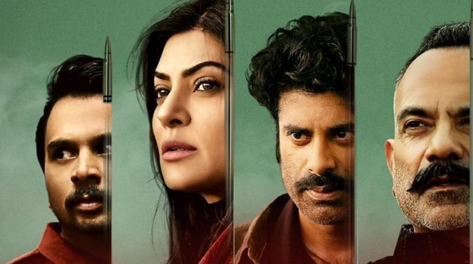
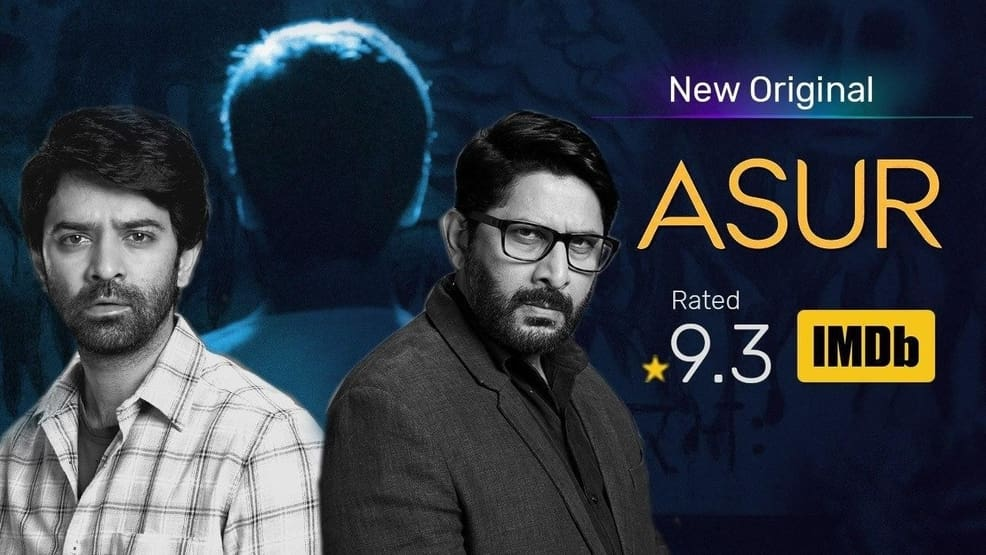
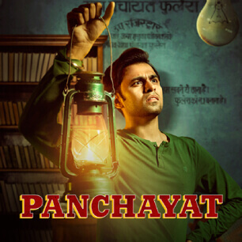
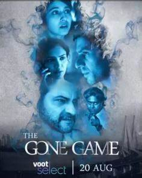
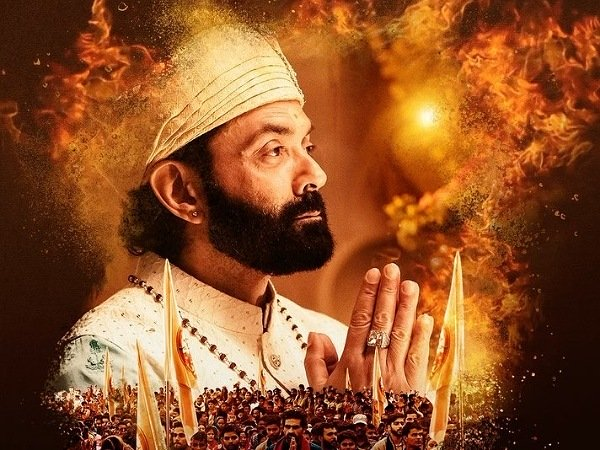
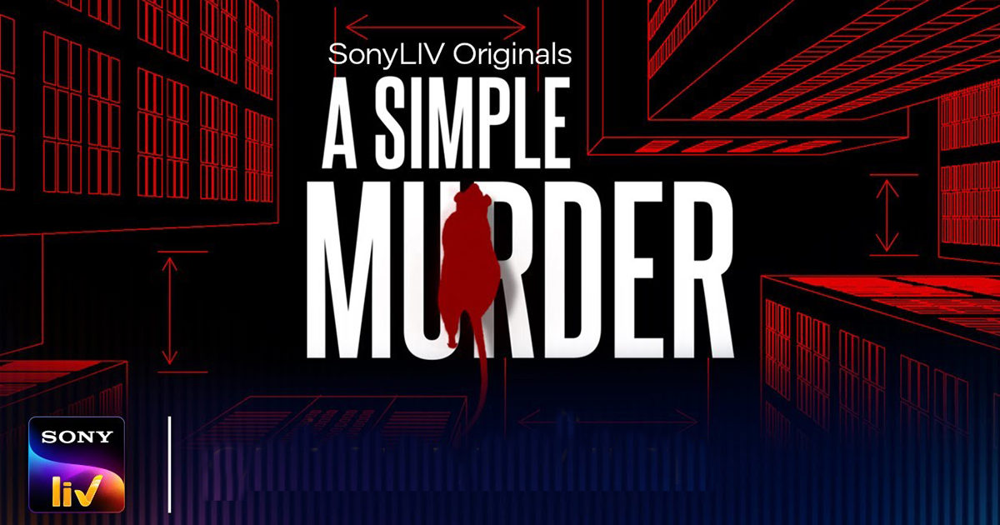

2020 Is About To Gone
Year is not made for Threater experiance. but the thrill's never down Watch Out 2020's popular indian web shows streaming on respective OTT plateform.
Scam 1992: The Harshad Mehta Story is a SonyLIV Originals Indian Hindi-language crime drama web-series directed by Hansal Mehta. Based on 1992 Indian stock market scam committed by stockbroker Harshad Mehta, the series is adapted from journalist Sucheta Dalal and Debashish Basu's 1992 book The Scam: Who Won, who Lost, who Got Away. Starring Pratik Gandhi

The story of this series revolves around a Raw agent Himmat Singh, who has been looking for a terrorist for 19 years who is mastermind of various attacks carried out in different cities on a single pattern. Singh has only one purpose of his life that terrorist should be arrested. His task force team of five agents support him on this mission. Will Himmat Singh ever catch this mastermind, this will be seen in this web series.
Paatal Lok Wiki The story of the web series Paatal Lok is based on the police officer Hathi Ram Chaudhary who looks forward less interest in his career. Suddenly, he gets the high profile case which lands on his table. The of Inspector Hathi Ram Chaudhary turns into the dark mystery of underworld which is also known as Paatal Lok

Aarya is an Indian crime drama web television series co-created by Ram Madhvani and Sandeep Modi based on the Dutch drama series Penoza by Pieter Bart Korthuis for Hotstar's label Hotstar Specials starring Sushmita Sen in the titular role. The show is produced by Endemol Shine India and Madhavani's Ram Madhavani Films.

Indian classical singer Radhe and pop star Tamanna. Despite their contrasting personalities, the two "set out together on a journey of self-discovery to see if opposites, though they might attract, can also adapt and go the long haul.
A psychopath killer with a twisted philosophy deep-seated in Indian mythology is on the loose. Two forensic officers from the CBI are close on heals to catch the serial killer but with a twist of fate, they get caught in a dreadful situation. How will this end? Will the real face of this ASUR be revealed?

Panchayat is a 2020 Indian comedy-drama web television series that premiered on Amazon Video on 3 April 2020. Produced by The Viral Fever, the series chronicles the life of engineering graduate who joins as a Panchayat secretary in a remote village Phulera of Uttar Pradesh due to lack of better job options.

The Gone Game is an Indian Psychological thriller webseries Directed By Nikhil Bhat starring Sanjay Kapoor, Shweta Tripathi, Arjun Mathur. The film was shot almost entirely within the confines of their homes, directed remotely. It is premiered on Voot.

With Bobby Deol, Chandan Roy Sanyal, Aditi Sudhir Pohankar, Darshan Kumaar. A duplicitous, aashram based, Indian Godman's good deeds serve activities criminal and unholy, such as rapes, murders, drugs, vote bank politics and forced male emasculation. The law and a few crusaders investigate to bring him to account.

A Simple Murder. Written by Prateek Payodhi and directed by Sachin Pathak, A Simple Murder is a dark comedy series that revolves around the life of a Delhi based wannabe entrepreneur, Manish (Mohd. Zeeshan Ayyub), who finds himself in big trouble after a murder plan goes wrong. The series is replete with a lot of twists and turns
